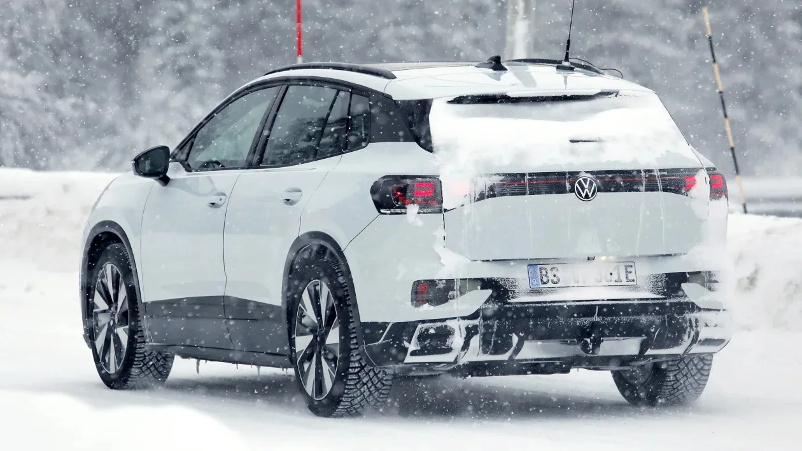
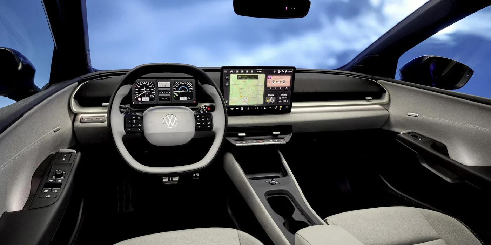

▲ 현재 국내에서 판매 중인 폭스바겐 ID.4. 프로 라이트와 프로 두 트림으로 구성돼 있다
폭스바겐의 순수 전기 SUV 'ID.4'가 지금 국내에서 어떻게 팔리고 있는지, 미국에서는 어떤 트림으로 구성되는지, 그리고 왜 조만간 이 이름 자체가 사라지게 되는지까지 한 번에 정리했습니다. 결론부터 말하면, ID.4는 부분변경을 거치며 이름까지 바꾸는 이례적인 선택을 앞두고 있습니다.
1. 지금 살 수 있는 ID.4 — 국내 가격과 제원
폭스바겐코리아가 현재 판매 중인 ID.4는 프로 라이트와 프로, 두 트림뿐입니다. 가격은 프로 라이트가 5,299만 원, 상위 트림인 프로가 6,040만7천 원입니다. 두 트림 모두 82.836kWh 리튬이온 배터리에 영구자석 동기모터(PSM)를 조합해 286마력, 55.6kg·m의 토크를 냅니다. 구동방식은 후륜구동(RWD) 단일 구성으로, 미국이나 유럽에서 판매되는 사륜구동(AWD) 버전은 국내에 들어오지 않습니다. 여기에 국고 보조금과 지자체 보조금이 더해지면 실구매가는 트림과 거주 지역에 따라 상당폭 낮아질 수 있습니다.

▲ 독일 현지에서 포착된 ID.4 부분변경 모델의 테스트카. 눈밭에서 촬영된 위장막 차량으로, 다음 세대의 실루엣을 짐작할 수 있다
2. 미국형은 다르다 — 5개 트림, AWD 335마력
같은 ID.4라도 미국 시장 라인업은 국내보다 훨씬 다양합니다. 시작 가격은 탁송료를 포함해 4만6,570달러부터이며, 트림은 Pro·AWD Pro·Pro S·AWD Pro S·AWD Pro S Plus까지 총 5종으로 나뉩니다. 후륜구동 모델은 단일모터로 282마력을 내며 EPA 기준 291마일(약 468km)을 주행할 수 있고, 듀얼모터를 얹은 사륜구동 모델은 335마력으로 출력은 높아지지만 주행거리는 263마일(약 423km)로 줄어듭니다. 급속충전은 최대 175kW를 지원해 10%에서 80%까지 약 30분이면 충전이 끝납니다. 국내에는 없는 AWD 옵션과 상위 트림이 존재한다는 점에서, 같은 차명이라도 시장별 상품성 차이가 꽤 뚜렷한 편입니다.
| 항목 | 국내(프로 라이트/프로) | 미국(Pro~AWD Pro S Plus) |
|---|---|---|
| 배터리 | 82.836kWh | 82kWh |
| 구동방식 | RWD 단일 | RWD/AWD 선택 |
| 최고출력 | 286마력 | 282~335마력 |
| 트림 수 | 2종 | 5종 |
| 급속충전 | - | 최대 175kW, 30분(10→80%) |

▲ 다음 세대 실내 이미지. 스티어링 휠에 물리버튼이 돌아왔고, 센터 디스플레이 아래로 원형 볼륨 노브를 비롯한 물리 조작계가 다시 자리 잡았다
3. "다시는 이런 실수 안 한다" — 터치 컨트롤을 버리다
ID.4를 포함한 초기 ID 시리즈는 정전식 터치 슬라이더와 터치 스티어링 휠 버튼으로 큰 비판을 받아왔습니다. 폭스바겐 개발 책임자 카이 그뤼니츠는 "ID.4와 ID.3가 원래의 디자인 방향으로 돌아가 폭스바겐 고유의 스타일을 되찾을 것"이라고 밝혔고, 디자인 부문 수장은 "이런 실수는 두 번 다시 하지 않을 것"이라는 취지로 터치 중심 설계를 사실상 실패로 규정했습니다. 다음 세대에는 실내 공조 조작계가 물리 버튼으로 돌아오고, 스티어링 휠에도 촉각으로 구분되는 실제 버튼이 다시 적용됩니다. 센터 디스플레이 아래로는 원형 볼륨 노브까지 부활합니다. 외관 역시 가솔린 티구안과 유사한, 더 각지고 전통적인 SUV 형태로 재설계되는 것으로 알려졌습니다.
▲ 눈밭에서 포착된 ID.4 다음 세대 테스트카 정면. 각진 그릴 라인과 새로운 헤드램프 형상이 가솔린 티구안을 연상시킨다
4. 이름까지 버렸다 — ID.4에서 'ID.티구안'으로
가장 파격적인 변화는 차명 자체입니다. 독일 노동조합 IG메탈이 확인한 바에 따르면, 부분변경을 거친 ID.4는 앞으로 'ID.티구안'이라는 이름으로 판매됩니다. 폭스바겐그룹 CEO 올리버 블루메 산하 승용 브랜드를 이끄는 토마스 셰퍼는 지난 3월 실적 발표 후 진행된 미디어 콜에서, 올해 유럽에서 진행되는 6개 월드 프리미어 중 하나로 "새로운 ID.4"를 10월에 공개하겠다고 확인했습니다. 판매는 2027년 초부터 시작될 것으로 예상되며, 생산은 기존과 마찬가지로 독일 엠덴 공장에서 이어집니다. IG메탈에 따르면 엠덴 공장의 ID.티구안 생산은 2031년 말까지 계획돼 있어, 단순한 이름 변경을 넘어 폭스바겐이 이 차종에 장기적으로 힘을 싣고 있다는 것을 보여줍니다. 숫자 중심 명명 체계를 벗어나 익숙한 차명을 다시 쓰는 흐름은 ID.4에 앞서 소형 전기차 ID.폴로에서도 이미 시작된 바 있습니다.
5. 정리 — 지금 사야 할까, 기다려야 할까
결론적으로 지금 국내에서 살 수 있는 ID.4는 5,299만 원부터 시작하는 가격과 286마력, 82.8kWh 배터리라는 이미 검증된 상품성을 갖추고 있습니다. 반면 다음 세대인 ID.티구안은 2026년 10월 유럽에서 먼저 공개되고 2027년 초 판매가 시작될 예정이며, 국내 출시 시점은 아직 확인되지 않았습니다. 터치 컨트롤에 대한 불만이 컸다면 물리버튼이 대거 복귀하는 신형을 기다려볼 만하지만, 당장 전기 SUV가 필요하다면 현재 판매 중인 모델도 가격 대비 상품성 측면에서 여전히 경쟁력이 있습니다. 이름이 바뀌는 순간까지, ID.4라는 이름으로 살 수 있는 시간은 이제 얼마 남지 않았습니다.